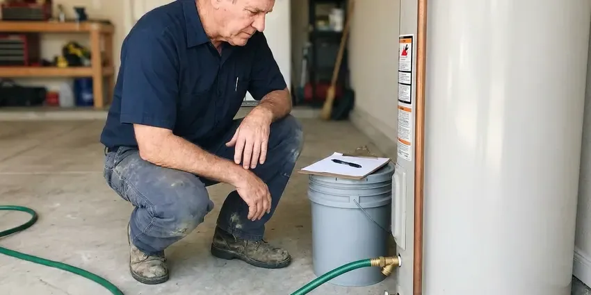
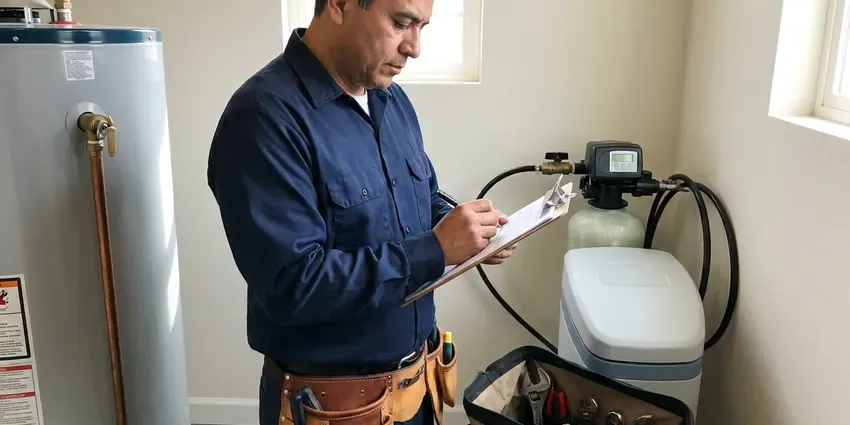
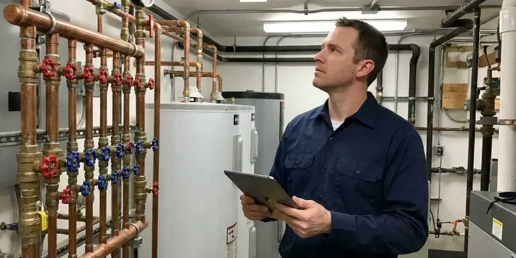
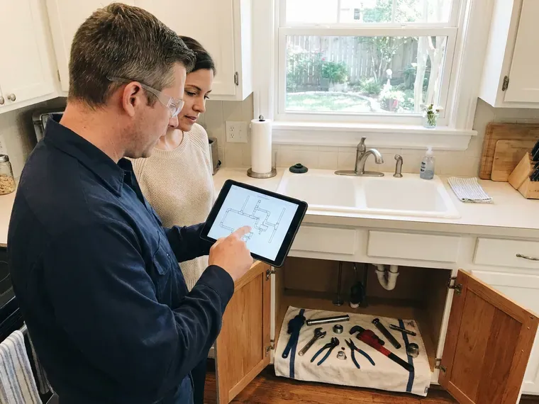

Plumbers Near Me in Fargo, ND
When you need reliable plumbers near me in Fargo, ND, HPN Plumbing is ready to help. We handle all plumbing issues for homes and businesses.
- Upfront Flat-Rate Pricing
- Fully Stocked Service Trucks
- Upfront Pricing
- Licensed and Insured Team
Expert Plumbers On Call Today in Fargo, ND.
Schedule your service today and experience the difference of working with HPN Plumbing.
Your Reliable Plumbers Near Me in Fargo, ND for Every Plumbing Need
HPN Plumbing built its reputation on showing up when promised and fixing problems the first time. Our trucks carry common parts from brands like Moen, Delta, Kohler, Rheem and A. O. Smith, so most repairs are finished the same day.
Our expertise includes:
- Leak detection and repair on copper, PEX and galvanized pipe
- Toilet, faucet, garbage disposal and fixture replacement
- Install and service water heaters, including tankless.

Additional Plumbing Maintenance Services in Fargo, ND
Our maintenance and specialty plumbing services in Fargo, ND catch small problems before they become emergencies.


Professional water heater maintenance, Fargo



Fargo residential plumbing service specialists

Local commercial plumbing by HPN Plumbing, Fargo

Customers
Why Choose HPN Plumbing for Plumbers Near Me in Fargo, ND?
Choosing the right plumber is important for protecting your home's infrastructure and comfort. We pride ourselves on clear communication and lasting repairs.
- Licensed Pros, Every job is handled or overseen by a licensed North Dakota plumbing contractor.
- Customer Satisfaction, Your peace of mind is our top priority, and we stand behind the quality of every plumbing service we provide.
- On-Time Arrival, We give you a real arrival window and call ahead when we are en route.
Citywide Coverage
We serve single-family homes, townhomes, rentals and small businesses throughout Fargo. Being close by keeps response times short and travel charges down.
Experienced Team
The HPN Plumbing plumbing team is made up of committed professionals who take pride in their craft. They have deep knowledge of plumbing systems, allowing them to diagnose problems accurately and deliver effective, long-lasting solutions for our Fargo customers.
Safety-First Approach
When you choose HPN Plumbing, you can rest assured that all work is performed with careful attention to safety and code compliance. Our plumbers are trained to identify and reduce potential hazards, protecting your property and family in Fargo.
Trusted Certified Fargo Plumbing Services Professionals
At HPN Plumbing, we take pride in providing licensed, certified plumbing services throughout Fargo, ND. Backed by recognized industry credentials, our experienced plumbers combine technical skill with genuine customer care. Whether it is repair, installation, or maintenance, we follow strict safety and quality standards to deliver long-lasting results you can trust.
Call Us Now PHCC Plumbing Contractor Recognition
PHCC Plumbing Contractor Recognition Better Business Bureau (BBB) Accreditation
Better Business Bureau (BBB) Accreditation Angi Certified Pro
Angi Certified Pro ISO 9001 Quality Management Certification
ISO 9001 Quality Management CertificationFull-Service Local Plumbing Services in Fargo, ND
Leak Detection and Pipe Repair in Fargo
Hidden leaks waste water and can damage drywall, cabinets and flooring. We use acoustic listening devices, thermal cameras and pressure tests to find leaks without unnecessary demolition. Repairs range from replacing a single copper fitting to rerouting a section of PEX. We also check for pinhole leaks, which are common in older copper lines exposed to aggressive water.

Emergency Plumbing Services in Fargo
Plumbing emergencies don't wait for business hours. Whether it's a burst pipe during a cold snap or a major sewer backup, our emergency plumbers are on call 24/7 to provide fast response. We arrive equipped with the necessary tools and parts to limit damage quickly and start repairs, preventing further costly issues for your home in Fargo.
Water Heater Repair & Installation in Fargo, ND
From traditional tank heaters to modern tankless systems, our experts specialize in water heater repair and installation. We diagnose issues like no hot water, strange noises, or leaks, and recommend the most energy-efficient solutions for your Fargo home. We work with leading brands like Rheem, AO Smith, and Bradford White, for reliable hot water for your family.
Sewer Line Repair & Replacement in Fargo, ND
Sewer line problems can be messy and disruptive. Basements are standard in most homes, and many rely on sump pumps to handle groundwater during wet springs. Shifting ground can put stress on older sewer pipes, leading to cracks or collapses. Our team offers complete sewer line solutions, including trenchless repair options like pipe bursting and relining, which minimize yard disruption. We also perform traditional excavation when needed, addressing issues like root intrusion, pipe corrosion, and blockages to restore proper drainage for your Fargo, ND property.
Leak Detection & Repair in Fargo
Even small leaks can cause serious damage over time, especially where humidity can speed mold growth. Our plumbers use advanced diagnostic tools like acoustic leak detectors and thermal imaging to pinpoint hidden leaks in walls, floors, and underground pipes. We then provide precise, non-invasive repairs for everything from dripping faucets and toilet leaks to slab leaks and burst pipes, preventing further water waste and structural damage in your Fargo home.
Fixture Installation & Repair in Fargo
From upgrading old fixtures to repairing broken ones, our plumbers provide expert installation and repair services for all your plumbing fixtures. This includes faucets, sinks, toilets, showers, bathtubs, and garbage disposals. We work with all major brands, ensuring proper installation and function. Whether you're remodeling a bathroom or simply need a leaky toilet fixed, we make sure your new or repaired fixtures work smoothly and efficiently in your Fargo home.
Water Heater Services in Fargo
Reliable hot water is essential, and our plumbers handle both tank and tankless water heater services. We handle everything from routine maintenance and minor repairs, such as anode rod replacement or flushing sediment buildup, to complete new installations. Whether you're upgrading to a more energy-efficient tankless model or replacing an aging conventional unit, we make sure of proper sizing and installation according to Fargo's plumbing codes, for consistent hot water for your household.

Toilet, Faucet and Fixture Repair in Fargo, ND
Running toilets, dripping faucets and leaky shower valves waste water and drive up your bill. We replace flappers, fill valves, cartridges and wax rings, or install new fixtures when repairs no longer make sense. Mineral buildup from hard water often wears out cartridges faster, so we carry common replacements. We can also install water-efficient fixtures that meet today's standards.
Why Choose HPN Plumbing for Plumbers Near Me in Fargo, ND?
Local plumbers also understand the permit process, inspection requirements and water conditions in your community. We keep the parts that local homes need most on our trucks. That helps us finish the job in a single visit.
Being 'near me' isn't just about proximity, it's about understanding the needs of our Fargo community. From navigating local building codes to addressing local issues like water quality or soil movement, our plumbers are equipped with the knowledge and tools to deliver dependable service right where you need it.
HPN Plumbing at a Glance
- Licensed and insured plumbers serving Fargo, ND
- Same-day appointments and 24/7 emergency response
- Upfront, flat-rate pricing before work begins
- 4.9-star rated by 408+ North Dakota customers
Fargo Map
Fargo Information
- Population
- 133,188
- Area codes
- 701/402/218
- Service area
- Fargo and communities within 40 miles
- Nearby
- West Fargo, Horace, Wahpeton, Valley City
Water softeners and filters are popular around Fargo because they protect water heaters, dishwashers and faucets. For homes in Fargo, ND, diligent plumbing maintenance and timely repairs help fight mineral buildup, soil movement and moisture, all of which can impact pipe integrity and fixture life.
Expert Services
Trust our professionals for reliable HPN Plumbing solutions in Fargo, ND.
Our Specialized Plumbing Services in Fargo, ND
At HPN Plumbing, we provide a complete range of plumbing services across Fargo, ND. From leak detection to full system installations, our team ensures fast, precise, and affordable service for both residential and commercial properties. Explore our core services below:


How Our Plumbers Near Me Service Works in Fargo, ND
At HPN Plumbing, we've simplified our plumbing service process to be as clear and efficient as possible, for a hassle-free experience for our Fargo, ND customers.
Request a Quote
Contact us by calling (701) 403-1348 or filling out our online form to describe your plumbing issue. Our helpful staff will gather the necessary details and schedule a convenient appointment for a diagnostic visit.
On-Site Diagnosis
A certified HPN Plumbing plumber will arrive at your Fargo property on time to thoroughly inspect your plumbing system. We use advanced tools to accurately diagnose the problem and explain our findings clearly.
Transparent Pricing
Before any work begins, you'll receive a clear, upfront estimate for the recommended repairs or services. We believe in complete transparency, so there are no surprises, just clear pricing.
Frequently Asked Questions About Plumbers Near Me in Fargo
Plumbing costs in Fargo can vary widely depending on the type and complexity of the service. A basic service call or minor repair, like a faucet drip, might range from $150-$300. More involved jobs, such as water heater replacement or slab leak repair, can range from $800 to several thousand dollars. We provide upfront, clear pricing after diagnosing the issue.
We recommend having a professional plumbing inspection every 1 to 2 years, especially for older homes in Fargo. Regular inspections can help identify minor issues before they become major problems, extend the lifespan of your plumbing system, and keep everything running efficiently. This proactive approach can save you money and prevent emergencies down the line.
Yes, HPN Plumbing stands behind the quality of our work. We offer comprehensive warranties on both parts and labor for our plumbing services in Fargo, ND. Specific warranty details will be provided with your service agreement, for your peace of mind.
While minor tasks like plunging a toilet or replacing a showerhead can be DIY, most plumbing repairs are best left to licensed professionals. Incorrect repairs can lead to more significant damage, costly leaks, and code violations. For anything beyond a simple fix, it's wise to call an expert plumber in Fargo so the job is done correctly and safely.
Backflow prevention devices are crucial for preventing contaminated water from flowing back into your clean drinking water supply. They are often required by local plumbing codes for commercial properties and certain residential systems, such as irrigation systems. Our plumbers can install, test, and repair these devices so your water remains safe and compliant with health regulations.
While minor clogs or drips might be DIY-friendly, most plumbing issues are best left to professionals. Attempting complex repairs without the right tools or expertise can lead to more significant damage, costly mistakes, or even safety hazards, especially with gas lines or structural plumbing. Professional plumbers have the training, tools, and experience to diagnose and fix problems correctly and safely.
We install and service Rheem, Bradford White, A. O. Smith, Navien, Rinnai and other major brands. We help you choose the right size and fuel type for your household. Tankless and high-efficiency options are available.
For plumbing emergencies in Fargo, we strive to provide the fastest possible response. Our emergency dispatch team is available 24/7, and we aim to have a skilled plumber on-site as quickly as possible, often within a few hours, to limit damage and begin repairs. Call us right away at (701) 403-1348 for urgent situations.
What People Are Saying About Our Plumbing Experts?

Mark T.
When our office needed drain cleaning, HPN Plumbing provided quick, reliable service. The plumber arrived on time and made sure every drain flowed perfectly before leaving. Very satisfied.
Drain Cleaning · Wahpeton, ND
James P.
Our commercial plumbing system had a leak under the sink, and HPN Plumbing handled it professionally. The plumbers arrived quickly and restored everything without disruption to our customers.
Commercial Plumbing · Fargo, ND
Sofia M.
Two new toilets installed in one visit, no mess left behind, and the tech even adjusted a faucet he noticed was dripping. Fair pricing and really friendly.
Toilet Installation · Jamestown, NDRobert G.
The trenchless sewer replacement saved our front yard. They walked us through the camera inspection footage first so we knew exactly what we were paying for.
Sewer Line Replacement · Jamestown, NDLaura S.
I scheduled a water heater replacement, and the team made the process smooth and affordable. The new unit works perfectly, and they cleaned up after completing the job.
Water Heater Replacement · West Fargo, ND
Patricia H.
We had a slab leak that two other companies could not find. HPN Plumbing located it in under an hour, explained our options, and the price matched the quote to the dollar.
Slab Leak Repair · West Fargo, ND